Introduction
Learning Objectives
This project will encompass the following learning objectives:
- Explore the usage of various provisioned database services in AWS.
- Experience loading data into and querying RDS, DynamoDB and HBase.
- Developing a social networking image timeline using heterogeneous backends such as RDS, DynamoDB, HBase and S3.
Database-as-a-Service (DBaaS)
Database-as-a-Service is provided by cloud operators, who are fully responsible for managing the databases that support applications, without the application developers performing traditional database administration functions. The database can seamlessly scale and is maintained, upgraded, backed-up by the cloud provider. DBaaSes silently and transparently handle server failure, without impacting the application developer in any way. The role of a database administrator becomes less essential in this scenario.
In this project module we will introduce you to database services on AWS. These services enable users to rapidly configure and deploy a database system without having to manually launch and configure instances and database software. In Project 3.3, you will explore Amazon's Relational Database Service (RDS), and a NoSQL database service (Amazon's DynamoDB). You will continue to explore HBase on EMR.
Amazon RDS
RDS is an AWS service that allows users to configure and deploy easy-to-configure relational databases. RDS provides users with a configured relational database instance of their choosing (MySQL, Oracle, MS SQL server, and others), running on specifically tuned database instance types, with optional performance enhancements such as provisioned IOPS storage. The main advantage of RDS is that the service will manage the database on behalf of the user, including the upgrading of the database software and backups, during user-specified maintenance windows. The main disadvantage of using RDS is that, you do not have fine-grained control over the deployment of the database. You can further watch this video which explains the functionality of RDS in detail.
Amazon DynamoDB
Amazon's DynamoDB is a NoSQL distributed database, similar to HBase and Cassandra. As a NoSQL Database, DynamoDB's functionality is limited compared to SQL databases- this is to ensure consistently high performance at very large scales. As an application developer using DynamoDB, your only parameters are how much read and write throughput your application needs- you do not have to worry about scaling, tuning, replication, etc. You can watch this video to learn more about DynamoDB.
Warning
Some the services you will be using for this project are expensive when left running or configured incorrectly. Please plan ahead and pay special attention to the instructions before provisioning any resources.
Resource Tagging
For this project, assign the tag with Key: Project and Value: 3.3 for all EC2 instances, RDS instances and HBase cluster instances. There is no need to tag DynamoDB, but ensure that you are tagging the EMR cluster that is created for loading the data into DynamoDB.
Build Your Own Social Network Image Timeline
Three weeks after you were promoted to work on the backend storage systems of Carnegie Records (CR), the company has decided to make the music content delivery service more social for its users. Your team has been given the task of building the first prototype. Since your manager is extremely happy with your work in the past three weeks, she has decided to assign you this important task. During your last team meeting, it was decided that the first step in making CR more social is building an image gallery timeline for its users. You have been asked to use the various database services in AWS to build this social network image timeline. You have been given a budget of $20 to complete this task. The frontend engineer in your team has provided a template of the social network image timeline and now you are responsible for implementing the backend.
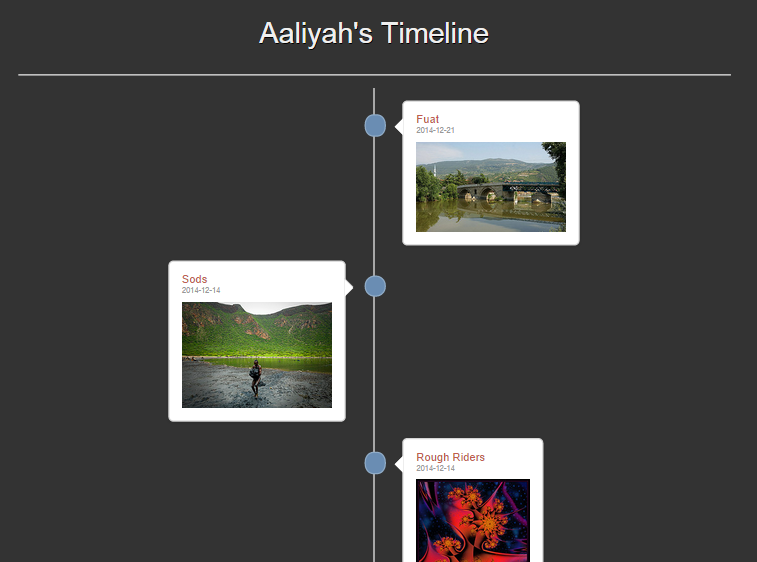Figure 1: Example Timeline
Architecture
For this project, your team has decided to use the web service structure shown below.
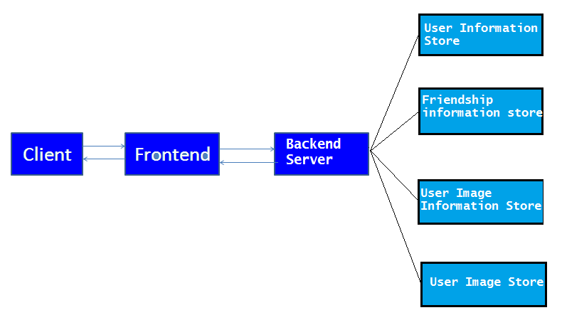Figure 2: General Architecture
As shown in the figure, the backend data stores include a "user information store" for authentication data, a "friendship information store" to manage social relations, a "profile image information store" to fetch the details of the images of a user, and an "image store" to get the actual images to be shown in the social network image timeline. In this project you need to load three different datasets into three different databases (RDS, HBase, DynamoDB) and query the databases for correct answers in JSON format according to the HTTP requests received. All datasets are provided in CSV (comma-separated values) format and you may need to modify the dataset in order to make it best fit the database.
Tasks to Complete
Step 0: Get Started!
Your team plans to build a web service with the structure shown in Figure 3. The frontend instance receives the requests from client and forwards it to the backend server instance after processing. Then the backend server instance will connect to the heterogeneous backends with RDS, HBase, DynamoDB and S3 to fetch useful data and send it back to the frontend. Finally, the frontend will render the data and display it to the client (usually a browser) as a image timeline.
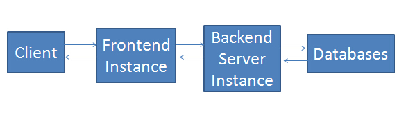Figure 3: Web Service Structure
Since your partner has already finished developing the frontend, you only need to implement the backend server and set up the databases. You need to load three different datasets into three different databases (RDS, HBase, DynamoDB) and query the databases for correct answers in JSON format according to the HTTP requests received. All datasets are provided in CSV (comma-separated values) format and you may need to modify the dataset in order to make it best fit the database.
| Name | AMI | Instance Type | Security Group |
|---|---|---|---|
| Frontend instance | ami-e26a498a | m3.large | all traffic |
| Backend server instance | ami-1420037c | m3.large | all traffic |
Table 1: AMI
| Name | Stored In | Description | Location |
|---|---|---|---|
| user.csv | RDS | user information |
/home/ubuntu/user.csv |
| links.csv | HBase | user1 is following user2 |
s3://soundrrr/links.csv |
| images.csv | DynamoDB | profile images |
s3://cloud.public/images.csv |
Table 2: Dataset Information (Stored on Backend Server Instance)
- Launch one frontend instance
- ssh to the frontend instance and run following command to start frontend service.
/home/ubuntu/wildfly-8.2.0.Final/bin/standalone.sh
Alternatively, you can run it in the background using
nohup /home/ubuntu/wildfly-8.2.0.Final/bin/standalone.sh & -
Go to http://frontend-public-dns:8080/p3-3.3/step1 in your browser. If you can see the following page, your frontend is correctly launched.
NOTE: The bootstrap process of the frontend instance takes around 3 minutes. 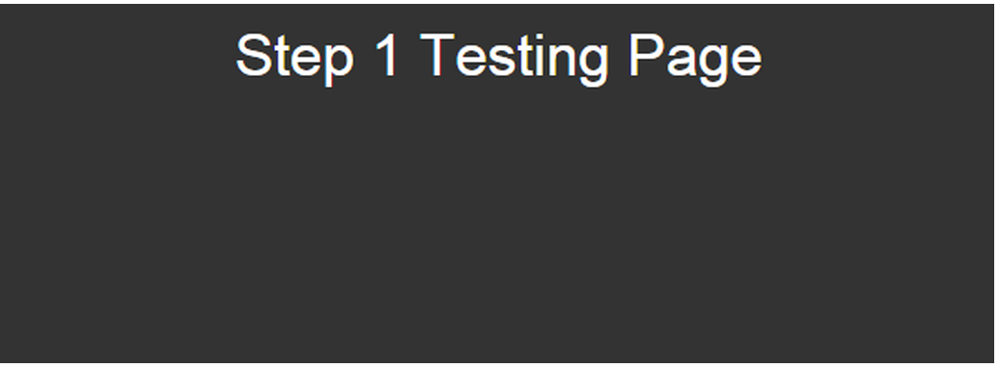Figure 4: Step 1- Testing Page
- Launch one backend server instance. On the backend server instance, you will implement the web server which receives the request from the frontend instance and fetch data from the backend databases. The frontend instance is used for rendering and displaying your response. Do not change any code or configuration on the frontend instance.
- SSH into the backend server instance using ubuntu as the user name and your own pem file.
- Go to the Project3_3 folder in the ubuntu home directory. We use Apache Maven to manage this project's build, reporting and documentation. Maven is a software project management and comprehension tool. It dynamically downloads Java libraries and Maven plug-ins from one or more repositories such as the Maven 2 Central Repository, and stores them in a local cache. Installing a library or plug-in can be as easy as search your desired repository here, and then copy the dependency into your pom.xml. Then execute
mvn clean install. - Your task is to complete MiniSite.java which can be found at
/home/ubuntu/Project3_3/src/main/java/cc/cmu/edu/minisite/MiniSite.java(currently the web application is not connected to any backend databse). - You can find the project object model (POM) file pom.xml which contains information about the project and configuration details used by Maven to build the project. All the necessary libraries are already included in pom.xml.
- In the folder Project3_3 you will also find the executable submitter, references and several other helper files.
- Now, before working on your project, try building the project using command:
mvn clean install
Then launch your server:
mvn exec:java -
Go to
http://frontend-public-dns:8080/p3-3.3/step1?id=1&pwd=MA0UWFHING9W&dns=backend-server-public-dnsin your browser and verify that you can see a dummy response.
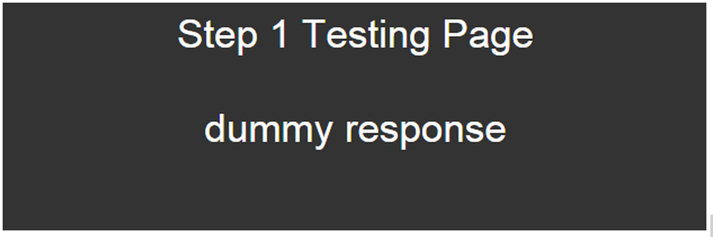Figure 5: Step 1- Dummy Response
-
Open MiniSite.java under
/home/ubuntu/Project3_3/src/main/java/cc/cmu/edu/minisite/directory. The server uses the Undertow framework. Undertow is a flexible performant web server written in Java. It has a composition-based architecture that allows you to build a web server by combining small single-purpose handlers. This gives you the flexibility to choose between a full Java EE servlet 3.1 container, or a low level non-blocking handler, or anything in between.
Note that:- Requests to the frontend are in the following format
http://frontend-public-dns:8080/p3-3.3/step#?id=XX&pwd=XXX&dns=backend-server-public-dns
It will be forwarded to the server in the following formathttp://server-public-dns:8080/step#?id=XX&pwd=XXX
Note the difference in the path and the parameters. - When implementing a server you must deal with HTTP requests and responses. In Undertow, the HttpServerExchange class describes the HTTP server request/response exchange. An instance of this class (exchange in this example) is constructed as soon as the request headers are fully parsed. The signature below shows the Request handler function.
public void handleRequest(HttpServerExchange exchange)
Useful methods of HttpServerExchange:
Method Modifier and Type Description getRequestPath() String Return the request path getQueryParameters() Map<String,Deque<String>> Return a multiple map of query parameters getResponseSender() Sender Get the response sender Table 3: Useful methods
A summary of all the methods of the HttpServerExchange class can be found here.
- Your response should be in JSON format and an example is provided in MiniSite.java. The detailed requirements for each query are explained at the end of each step. Learn more about JSON in Java here.
- Now that you have an idea about the structure of this project, you can complete the following steps to build your own image timeline!
- Requests to the frontend are in the following format
Step 1: user authentication and fetching user information. (RDS)
The first task in building the Timeline is authenticating users and fetching some basic information about them. Your team decided to use MySQL as the backend database for this step. The database service you will be using for this is RDS. When a user logs in to the website with <userid> and <password>, the backend server needs to validate the login information using the RDS. If <userid> and <password> are valid for a particular user, the user's <name> should be displayed on the page. Otherwise, it should be shown as "Unauthorized". In this project, we will use a simple Http request GET /step1?id=XX&pwd=XXX to simulate this process. To begin, you need to provision an RDS-managed MySQL database and store the user information in it.
The dataset you are going to deal with in Step 1 is user.csv. This dataset contains three fields separated by commas: userid, password, and name. user.csv briefly describes users' account information, their userid, password to the account, and name.
| Name | Stored In | Description | Location |
|---|---|---|---|
| user.csv | RDS | user information |
/home/ubuntu/user.csv |
Table 4: RDS Information
Setting up RDS
- Log on to the AWS console and navigate to the RDS home page.
-
Launch a new MySQL database instance with the following settings:
- Select Yes for Production instance.
- DB Instance Class - db.m3.medium.
- Multi AZ Deployment - No.
- Storage Type - Provisioned IOPS SSD.
- Allocated Storage - 100GB.
- Provisioned IOPS - 1000.
- Ensure that the security group allows port 3306.
- Note down your DB’s endpoint URL, which indicates the DB's host address and port.
- Create a table with the appropriate schema for user information (Hint: Look at user.csv to get an idea for the schema).
-
Load user.csv into RDS. Connect to RDS in MiniSite.java. JDBC is already installed and imported.
You need to rebuild your project by executingmvn clean installin the Project3_3 directory each time your code has been changed.
You can start your Undertow web server, usingmvn exec:java. Alternatively, you can run it in background usingnohup mvn exec:java & - Read more about JDBC here.
Request and Response of Your Server
Request Format (received by server)
GET /step1?id=<userid>&pwd=<password>
Response Value (server sends to frontend)
If the <userid> and <password> is a pair, set username as the response value. Otherwise, set as "Unauthorized".
Response Format
JSONObject response = new JSONObject();
response.put("name", responseValue);
String content = "returnRes("+mapper.writeValueAsString(response)+")";
sender.send(content);
You can use your frontend instance to check your answer.
Example Query:
http://frontend-public-dns:8080/p3-3.3/step1?id=1&pwd=MA0UWFHING9W&dns=backend-server-public-dns
Answer
Aaliyah
Step 2: Friends' Relationship (HBase)
Now that you have authenticated the user, you are expected to develop the user's list of friends in order to build the timeline for the user. In order to achieve this, you will be using HBase. Similar to P3.2, you will be using Amazon's Elastic MapReduce (EMR) to provision an HBase cluster and store the "friend relationship" information.
| Name | Stored In | Description | Location |
|---|---|---|---|
| links.csv | HBase | user1 is following user2 (user2 is followed by user1) |
s3://soundrrr/links.csv |
Table 5: HBase Information
Note: All the directory, file and table names, which are marked as bold should be replaced by your own names
-
Provision an HBase cluster using EMR as you learned in P3.2. The instance type to be used for HBase is m1.large and the number of core instances is 1. Also, you should follow some key configurations given below:
- Choose AMI version 2.4.2 (Hadoop version 1.0.3).
- Remove any existing services such as Pig and Hive and choose to install HBase version 0.92.
- Use the same subnet as your frontend instance (you need to connect to the HBase master using its private ip).
- Modify the Security Group to enable all traffic.
- Specify a key-pair to be able to SSH to the individual instances. Note that the username to use while SSHing to these instances is hadoop.
- Do not forget to set a tag that will be automatically propagated to the individual instances in the cluster.
- Enable "termination protection" and "keep-alive" for your cluster.
- SSH to the HBase master node. You can use the method learned in P3.2 to check each node’s status.
-
Design your own schema and load the links.csv into HBase (Hint: You may want to preprocess the file to fit the schema better). Try to leverage the features that make HBase unique for this purpose.
-
Recall that the file links.csv has two columns
- Each user can be a friend of multiple users, and each user can have multiple friends.
- Learn more about HBase here.
-
Recall that the file links.csv has two columns
-
Create a table for friend relationship (following/followed).
- Read more about HBase Shell commands here.
HBase includes several methods of loading data into tables. We will introduce the Bulk Load method in this project.
The most straightforward method is to either use the TableOutputFormat class from a MapReduce job, or use the normal client APIs; However, these are not always the most efficient methods because these APIs cannot handle bulk loading.
Bulk Importing bypasses the HBase API and writes contents, which are properly formatted as HBase data files – HFiles, directly to the file system. Analyzing HBase data with MapReduce requires custom coding.
Using bulk load will use less CPU and network resources than simply using the HBase API. ImportTsv is a custom MapReduce application that will by default load data in TSV (Tab Separated Value) format into HBase. By adding optional arguments, importTsv can work for other format files including CSV.
- Upload dataset (in TSV/CSV format) to HDFS (Hadoop Distributed File System)
-
To check if the file is successfully uploaded, using following command.
hadoop fs -ls /dataRead more about hadoop fs commands here. -
Use importTsv to prepare HFiles for HBase table t1. Run the following command to transform the data from the file example.csv in HDFS to StoreFiles and store at a relative path specified by Dimporttsv.bulk.outputHbase
bin/hbase org.apache.hadoop.hbase.mapreduce.ImportTsv -Dimporttsv.bulk.output=example/storeDataFileOutput -Dimporttsv.columns="HBASE_ROW_KEY,column_family_name" -Dimporttsv.separator="," t1 /data/example.csv
You can see the progress of the MapReduce job if it's successfully launched 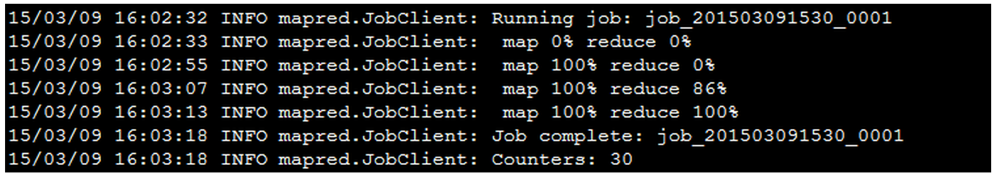Figure 6: Map Reduce job status
Check last Map output records (last line of the output) to verify your result. Generally speaking, it equals to number of records in your dataset.
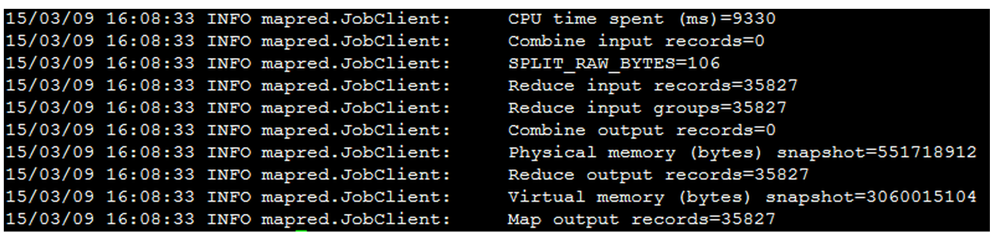Figure 7: Job Information
Hint: If your dataset is in tsv format, you can omit the .separator option. As with any other MapReduce job, the output directory should not exist before running.
-
Use the completebulkload tool to complete the upload of data. Run the following to upload the data from the HFiles located at example/storeDataFileOutput to the HBase table t1
bin/hbase org.apache.hadoop.hbase.mapreduce.LoadIncrementalHFiles example/storeDataFileOutput t1 -
To verify that the data is successfully loaded, open the HBase shell and scan the table.
scan 't1'
UseCtrl-Cto stop the scan.
Note: Your loading method is not restricted in this project. Feel free to explore use TableOutputFormat class from a MapReduce job, HBase client APIs and other possible methods.
The File System (FS) shell includes various shell-like commands that directly interact with the Hadoop Distributed File System (HDFS) as well as other file systems that Hadoop supports, such as Local FS, HFTP FS, S3 FS, and others. The FS shell is invoked by:
bin/hadoop fs <args>
Run the following commands to complete this task.
hadoop fs -mkdir /data
hadoop fs -put localFileSystemPath/example.csv /data/
- HBase and Hadoop libraries are already installed and imported.
- Use private ip address of master node to connect to HBase.
- Read more about HBase APIs here.
Request and Response of Your Server.
Request Format.
GET /step2?id=<userid>
Response Value.
Return <userid> of all people that is followed by the person <userid> in Alphabetical Order (NOT Numeric Order)
Response Format.
JSONObject response = new JSONObject();
JSONArray friends = new JSONArray();
JSONObject friend1 = new JSONObject();
JSONObject friend2 = new JSONObject();
friend1.put("userid", id1);
friend2.put("userid", id2);
friends.add(friend1);
friends.add(friend2);
response.put("friends", friends);
String content = "returnRes("+mapper.writeValueAsString(response)+")";
sender.send(content);
Once you are done, when querying the frontend with a userid, a list of FriendIDs should be shown as below.
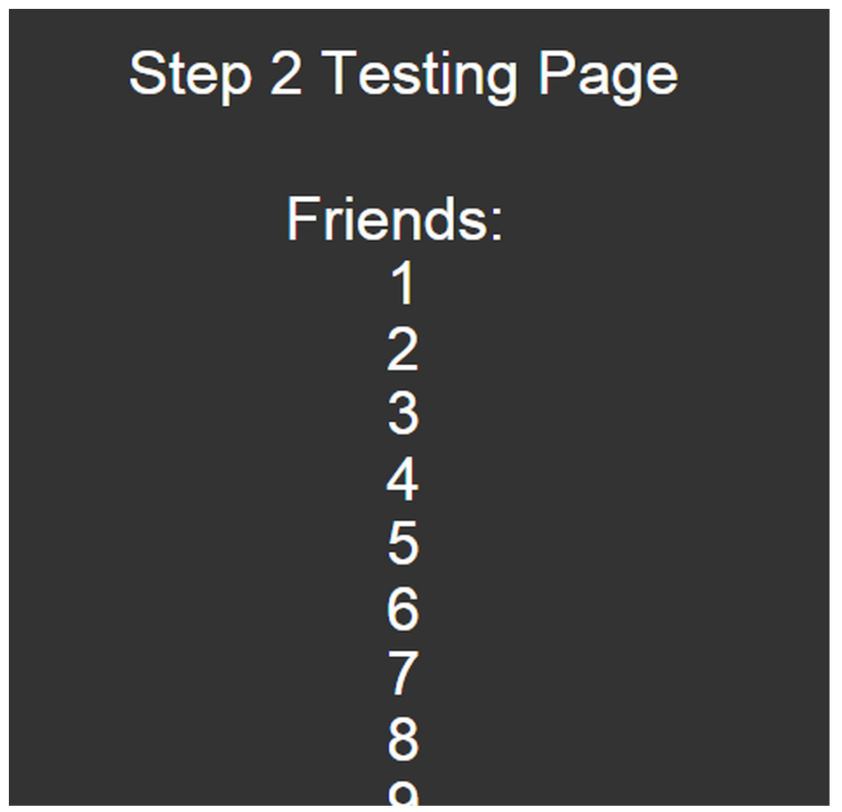
Figure 8: List of Friends
Step 3: Images for the timeline (DynamoDB)
Now that you have the list of friends for every user, you are ready to fetch the images that need to be shown in the timeline of a particular user. In this step, you will be using DynamoDB as your backend store. In this task, we will create a DynamoDB database and store user profile images (each person has exactly 1 profile image and is identified by his/her id) in it.
Since images are usually much bigger than text dataset, the images are stored in S3 and their URLs are stored in a text dataset instead.
| Name | Stored In | Description | Location |
|---|---|---|---|
| images.csv | DynamoDB | profile images |
s3://cloud.public/images.csv |
Table 6: DynamoDB Information
Warning on DynamoDB costs
Amazon charges DynamoDB users based on the provisioned read and write capacities per hour. You will be charged for the provisioned capacity, irrespective of the actual number of requests that are sent to your DynamoDB table. You can incur extremely high costs if you leave DynamoDB provisioned for even a few hours. Calculate your costs before starting to avoid going over the project limit. Please complete all tasks in one sitting and delete the DynamoDB table once you have completed with the checkpoint.
Setting up Amazon DynamoDB
-
In AWS, choose DynamoDB service from console and create a new DynamoDB table.
- Set the primary key type to Hash.
-
Set Hash Attribute Name to userid and choose type Number to use
as hash key. - Set the Read and Write capacities to 300.
- Note the region in which AWS creates the table.
-
Prepare images.csv for loading into DynamoDB.
You can directly use the import table function provided by DynamoDB. However, tables of DynamoDB is stored in a different format from CSV/TSV files, so first you need to convert images.csv into the correct format for DynamoDB. Read more about DynamoDB data format validation here. A sample line of record is shown as below:
url\x03{"s":"https://soundrrr.s3.amazonaws.com/0000210873e35b413b322fb9971275.png"}\x02userid\x03{"n":"1"}\x02time\x03{"s":"2012-11-16"}Find a sample for DynamoDB import at /home/ubuntu/sample.
- Create a new folder on S3 and upload the processed data into it. Since you will be launching a MapReduce job to load the data into DynamoDB, the import directory should be a directory instead of a single file. In this case, the output directory is exactly your DynamoDB.
-
Load data with correct format into DynamoDB.
-
Click Export/Import in DynamoDB.
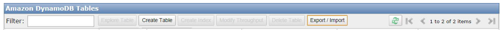
Figure 9: DynamoDB Export/Import
- Select a table and choose Import into DynamoDB.
-
Set up the import and log directory, then you need to create two IAM roles, a Data Pipeline Default Role and a Default Resource Role, to complete this task. Without the correct IAM role, the pipeline will not be able to access DynamoDB and/or S3.
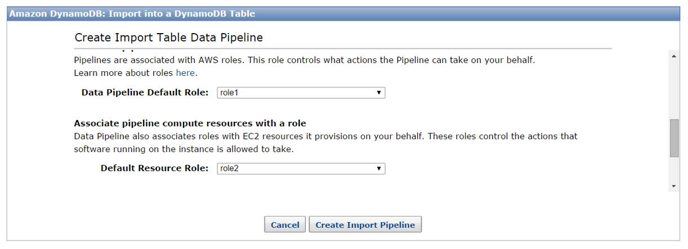
Figure 10: Import into DynamoDB Table
-
Go to IAM in Services and choose Roles from the dashboard on the left.
- Create a role (role1) with Role Type AWS Data Pipeline. Click Next Step and leave the checkbox empty.
-
Go to Policies and choose Create Policy => Create Your Own Policy. Then add the following to Policy Document.
{ "Version": "2012-10-17", "Statement": [ { "Effect": "Allow", "Action": [ "s3:List*", "s3:Put*", "s3:Get*", "s3:DeleteObject", "s3:CreateBucket", "dynamodb:DescribeTable", "dynamodb:Scan", "dynamodb:Query", "dynamodb:GetItem", "dynamodb:BatchGetItem", "dynamodb:UpdateTable", "ec2:AuthorizeSecurityGroupIngress", "ec2:DeleteTags", "ec2:Describe*", "ec2:CancelSpotInstanceRequests", "ec2:CreateSecurityGroup", "ec2:DeleteTags", "ec2:CreateTags", "ec2:ModifyImageAttribute", "ec2:ModifyInstanceAttribute", "ec2:RequestSpotInstances", "ec2:RunInstances", "ec2:StartInstances", "ec2:StopInstances", "ec2:TerminateInstances", "elasticmapreduce:*", "rds:DescribeDBInstances", "rds:DescribeDBSecurityGroups", "redshift:DescribeClusters", "redshift:DescribeClusterSecurityGroups", "sdb:BatchPutAttributes", "sdb:Select*", "sns:GetTopicAttributes", "sns:ListTopics", "sns:Publish", "sns:Subscribe", "sns:Unsubscribe", "iam:PassRole", "iam:ListRolePolicies", "iam:GetRole", "iam:GetRolePolicy", "iam:ListInstanceProfiles", "cloudwatch:*", "datapipeline:DescribeObjects", "datapipeline:EvaluateExpression" ], "Resource": [ "*" ] } ] } - Attach the policy to role1 you created just now.
- Select role1 in Roles, and choose Edit Trust Relationship to replace the default one with the following.
{ "Version": "2012-10-17", "Statement": [ { "Sid": "", "Effect": "Allow", "Principal": { "Service": [ "datapipeline.amazonaws.com", "elasticmapreduce.amazonaws.com" ] }, "Action": "sts:AssumeRole" } ] } -
Create another role (role2) with Role Type Amazon EC2 Role for Data Pipeline, and add the following to Policy Document.
{ "Version": "2012-10-17", "Statement": [ { "Effect": "Allow", "Action": [ "s3:*", "dynamodb:*", "ec2:Describe*", "elasticmapreduce:Describe*", "elasticmapreduce:ListInstance*", "elasticmapreduce:AddJobFlowSteps", "rds:Describe*", "datapipeline:*", "cloudwatch:*", "redshift:DescribeClusters", "redshift:DescribeClusterSecurityGroups", "sdb:*", "sns:*", "sqs:*" ], "Resource": [ "*" ] } ] }
-
Click Export/Import in DynamoDB.
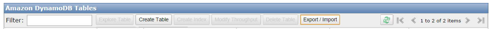
-
Set role1 as Data Pipeline Default Role and role2 as Default Resource Role in DynamoDB Create Import Table Data. Then click Create Import Pipeline and the import should be finished in no more than 30 minutes. You can also check the progress in EMR.
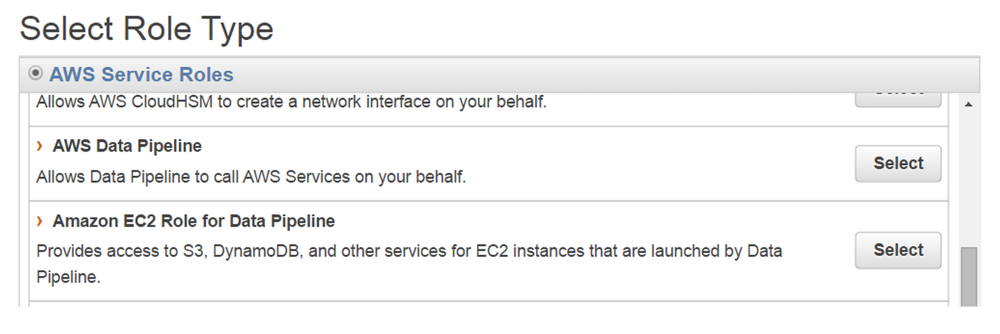
Fig 10 Step 3: Set DynamoDB Role
-
Connect and query DynamoDB using Amazon DynamoDB API.
- You need your credentials to connect to DynamoDB. Use the method in Project 2 to import credentials/properties. Do not explicitly leave your credential information in the code.
- Read more about DynamoDB APIs here.
Request and Response of Your Server
Request Format
GET /step3?id=<userid>
Response Value
Return <created_date> and <image_url> of the given <user_id>
Response Format
JSONObject response = new JSONObject(); response.put("time", createdDate); response.put("url", imageUrl); String content = "returnRes("+mapper.writeValueAsString(response)+")"; sender.send(content);After completing these steps, when querying frontend with userid, a timeline with single image should be shown as below.
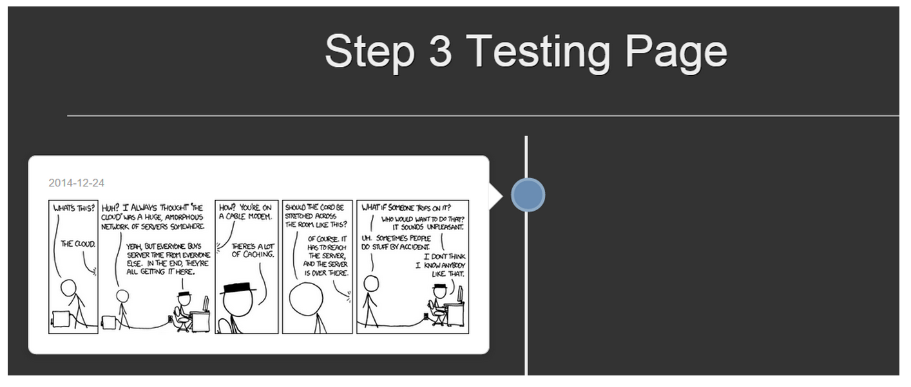Figure 11 Step 3: Testing Page
Step 4: Putting All Things Together (aka getting the Timeline working)
By now, you should have some experience with RDS, HBase, and DynamoDB. Recall that you implemented a rudimentary user authentication system in Step 1, a friend-fetch system in Step 2, and a user-profile-image-fetch system in Step 3. The last thing you need to do is to put all these together to build an image timeline. Once the user logs in with a <userid> and <password>, all the user's friends profile images should be displayed in the timeline. The structure of the web service will look as shown in Figure 12.
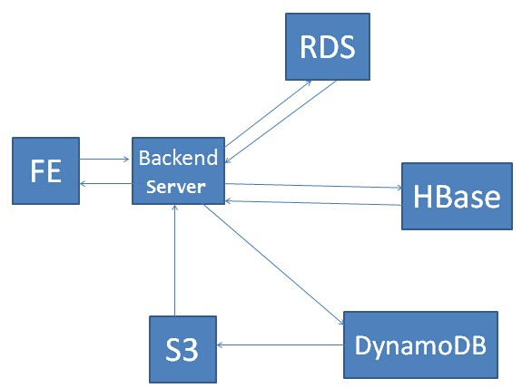Figure 12 Step 3: Step 4 Overview
Request and Response of Your Server
Request Format
GET /step4?id=<userid>&pwd=<password>
Response Value
Response Format
JSONObject response = new JSONObject();
JSONArray photos = new JSONArray();
JSONObject photo1 = new JSONObject();
photo1.put("url", url1);
photo1.put("time", time1);
photo1.put("name", friendname1);
photos.add(phto1);
response.put("name", name);
response.put("photos", photos);
String content = "returnRes("+mapper.writeValueAsString(response)+")";
sender.send(content);
Hint
Consider this query on the frontend instance:
GET /p3-3.3/step4?id=id1&pwd=pwd1&dns=server-public-dns
You should see the following response
1.Name of user <id1> will be shown on the title as "USER1's Timeline" if <id1> and <pwd1> is a pair. Otherwise, show "Unauthorized"
2.All his friends photos should be displayed on the timeline (please refer to Response Value section in Step 4 for detailed rules)
3.Each friend's name and his/her photo's create date should be displayed on top of his photo
Example
RDS
| userid | password | name |
|---|---|---|
| 1 | 15619p3 | TA |
| 20 | xxxxxxx | Professor |
| 35 | xxxxxxx | Student |
Table 7: Data in RDS
user 1 has 2 friends 20, 35
DynamoDB
| userid | time | imageUrl |
|---|---|---|
| 20 | 2014-01-02 | link1 |
| 35 | 2014-12-30 | link2 |
Table 8: Data in DynamoDB
Request 1
GET /step4?id=1&pwd=15619p3
Response 1
{
"name" : "TA",
"photos" : [
{"name" : "Professor", "url" : link1, "time" : "2014-01-02"},
{"name" : "Student", "url" : link2, "time" : "2014-12-30"}
]
};
Request 2
GET /step4?id=1&pwd=wrong
Response 2
{
"name" : "Unauthorized"
"photos" : []
};
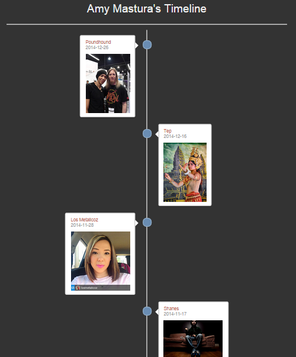
Step 4
Grading
Your web service (MiniSite.java) should simultaneously support all the 4 queries from step 1 to 4
| step | Request | Response |
|---|---|---|
| Step1 | GET /step1?id=XX&pwd=XXX | name |
| Step2 | GET /step2?id=XX | friends ids |
| Step3 | GET /step3?id=XX | image url and create date |
| Step4 | GET /step4?id=XX&pwd=XXX | name, all his friends' name, profile image and image's create date |
Table 9: Queries
Once you have completed all the questions, you can submit the answers to the evaluation system using the auto-grader executable submitter which is present in the Project3_3 folder.
./submitter from the Project3_3 folder. After running this command, you should be able to see your scores on TPZ in a few minutesThe score distribution is as follows:
| Step1 | Step2 | Step3 | Step4 | Code | |
|---|---|---|---|---|---|
| Score (100) | 15 | 20 | 20 | 25 | 20 |
Table 10: Grading Details
Additional Reading and References
Project Grading Penalties
The following table outlines the violations of the project rules and their corresponding grade penalties for this project.
| Violation | Penalty of the project grade |
|---|---|
| Spending more than $20 for this project phase | -10% |
| Spending more than $40 for this project phase | -100% |
| Failing to tag all your resources for this project (Key: Project Value:3.3) | -10% |
| Not using required databases for each step | -100% |
| Submitting your AWS credentials in your code for grading | -10% |